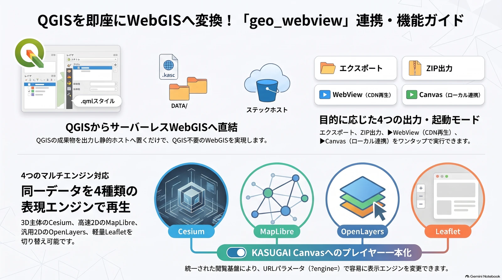

geo_webview — サーバレス Web 配信プラグイン
開いている QGIS プロジェクトを .kasc+DATA/ パッケージに出力し、KASUGAI Canvas のマルチエンジン（Cesium / MapLibre / OpenLayers / Leaflet）で再生する QGIS プラグインの公式ドキュメントです。

▶ サンプルサイトを開く — geo_webview の出力物を再生する KASUGAI Canvas（Cesium エンジン）の公開デモ。インストール不要でブラウザから確認できます
geo_suite の一部として開発
開いている QGIS プロジェクトを.kasc+DATA/パッケージに出力し、 KASUGAI Canvas のマルチエンジン（Cesium / MapLibre / OpenLayers / Leaflet） で再生する QGIS プラグイン。出力物は静的ホスティングだけで配信できる サーバレス構成が本体であり、内蔵 HTTP サーバー（起動API・/export-data/配信・画面共有・受領履歴）がそれを補助します。